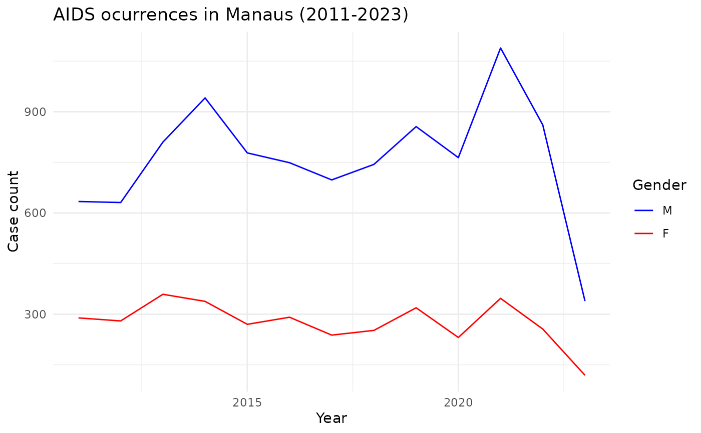

aids_amazonas - A dataset of AIDS occurrences from 2011 to 2023 in Amazonas
aids_amazonas.RdThis dataset contains data of the AIDS occurrences in each municipality from Amazonas.
Source
BRASIL. Ministério da Saúde. Departamento de HIV, Aids, Tuberculose, Hepatites Virais e Infecções Sexualmente Transmissíveis. Indicadores HIV, Aids. Available in: https://indicadores.aids.gov.br/.
Examples
# \donttest{
# Aids - case count in Manaus
# Loading dplyr and ggplot to structure the data
require(dplyr)
#> Loading required package: dplyr
#>
#> Attaching package: ‘dplyr’
#> The following objects are masked from ‘package:stats’:
#>
#> filter, lag
#> The following objects are masked from ‘package:base’:
#>
#> intersect, setdiff, setequal, union
require(ggplot2)
#> Loading required package: ggplot2
# Filtering by municipality and plotting case count by gender
aids_amazonas %>%
filter(name_muni == "Manaus") %>%
group_by(gender) %>%
ggplot(aes(x = year, y = cases, group = gender, color = gender)) +
geom_line() +
scale_color_manual(values = c("blue", "red")) +
theme_minimal() +
labs(
title = "AIDS ocurrences in Manaus (2011-2023)",
x = "Year",
y = "Case count",
color = "Gender"
)

# }